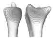
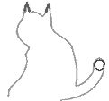
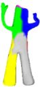

|
|
Journal Papers- Table-top Computed Lighting for Practical Digital Photography, Ankit Mohan, Reynold Bailey, Johnathon Waite, Jack Tumblin, Cindy Grimm and Bobby Bodenheimer. IEEE Transactions on Computer graphics and Visualization (TCGV), Accepted pending minor revisions2006.
- Interactive Decal Compositing with Discrete Exponential Maps, Ryan Schmidt, Cindy Grimm and Brian Wyvill. Transactions on Graphics, 25(3)2006.
- Estimating Curvature on Triangular Meshes, Timothy Gatzke and Cindy Grimm. International Journal of Shape Modeling, 12(1): 1-29, 2006.
- Keyframing using Linear Interpolation of Matrices, Amy Hawkins and Cindy Grimm. Journal of Graphics Tools, To appear2006.
 Implementing the IBar camera widget, Cindy Grimm and Karan Singh. Journal of Graphics Tools, 10(3): 51-64, 2005. Implementing the IBar camera widget, Cindy Grimm and Karan Singh. Journal of Graphics Tools, 10(3): 51-64, 2005.- Parameterization using Manifolds, Cindy Grimm. International Journal of Shape Modeling, 10(1): 51-80, 2004.
- Estimating Joint Contact Areas and Ligament Lengths from Bone Kinematics and Surfaces, Georgeta Elizabeth Marai, David Laidlaw, Cagatay Demiralap, Stuart Andrews, Cindy Grimm and Joseph Crisco. IEEE Transactions on Biomechanical Engineering, 51(5): 790-799, 2004.
 Say Cheese!: Experiences with a Robot Photographer, Zachary Byers, Michael Dixon William Smart and Cindy Grimm. AAAI Magazine, 25(3): 37-46, 2004. Say Cheese!: Experiences with a Robot Photographer, Zachary Byers, Michael Dixon William Smart and Cindy Grimm. AAAI Magazine, 25(3): 37-46, 2004. Fitting Manifold Surfaces To 3D Point Clouds, Cindy Grimm, David Laidlaw and Joseph Crisco. Journal of Biomechanical Engineering, 124: 136-140, 2002. Fitting Manifold Surfaces To 3D Point Clouds, Cindy Grimm, David Laidlaw and Joseph Crisco. Journal of Biomechanical Engineering, 124: 136-140, 2002.- A Framework for Synchronized Editing of Multiple Curve Representations, Cindy Grimm and Matthew Ayers. Computer Graphics Forum (Eurographics), 17(3): 31-40, 1998.
Conference Papers- Feature Detection Using Curvature Maps and the
Min-Cut/Max-Flow Algorithm, Timothy Gatzke and Cindy Grimm. In "Geometric Modeling and processing", 2006.
- The Effect of Warm and Cool Object Colors on Depth Ordering, Reynold Bailey, Cindy Grimm and Christopher Davoli. In "Symposium on Applied Perception in Graphics and Visualization", 2006.
- 3D Screen-space Widgets for Non-linear Projection, Leon Barrett, Patrick Coleman, Nisha Sudarsanam, Karan Singh and Cindy Grimm. In "Graphite", pages 221-228, 2005.
- Spherical Manifolds for Adaptive Resolution Surface Modeling, Cindy Grimm. In "Graphite", pages 161-168, 2005.
- Interactive Manipulation of Projections with a Curved Perspective, Nisha Sudarsanam, Cindy Grimm and Karan Singh. In "Eurographics short papers", volume 24, number 3, pages 105-108, 2005.
- Curvature Maps for Local Shape Comparison, Timothy Gatzke, Steve Zelinka, Cindy Grimm and Michael Garland. In "Shape Modeling International", pages 244-256, 2005.
- The IBar: A Perspective-based Camera Widget, Karan Singh, Cindy Grimm and Nisha Sudarsanam. In "UIST", 2004.
- Using Texture Synthesis for Non-Photorealistic Shading from Paint Samples, Christopher Kulla, James Tucek, Reynold Bailey and Cindy Grimm. In "Pacific Graphics", pages 477-481, 2003.
- An Autonomous Robot Photographer, Zachary Byers, Michael Dixon, Kevin Goodier, William Smart and Cindy Grimm. In "(IEEE/RSJ) International Conference on Robots and Systems (IROS)", pages 2636-2641, 2003.
- Parameterizing N-holed Tori, Cindy Grimm and John Hughes. In "Mathematics of Surfaces X", pages 14-29, 2003.
- Say Cheese!: Experiences with a Robot Photographer, Zachary Byers, Michael Dixon, Cindy Grimm and William Smart. In "Innovative Applications of Artificial Intelligence (IAAI)", pages 65-70, 2003.
- A New Input Device for 3D Sketching, Mark Schroering, Cindy Grimm and Robert Pless. In "Vision Interface", pages 311-318, 2003.
- A 3D Pattern for Pose Estimation for Object Capture, Lei Wang, Cindy Grimm and Robert Pless. In "Vision Interface", pages 395-401, 2003.
- Contact Areas and Ligament Lengths are Abnormal in Patients with Malunited Distal Radius Fracture Despite Normal Radioulnar Kinematics, G. Elisabeta Marai, David H. Laidlaw, Cagatay Demiralp, Cindy Grimm, Joseph J. Crisco, Douglas Moore and E. Akelman. In "World Congress Biomechanics", 2002.
- Simple Manifolds for Surface Modeling and Parameterization, Cindy Grimm. In "Shape Modeling International", pages 237-245, 2002.
- Modeling and Visualization of Inter-Bone Distances in Joints, Cagatay Demiralp, Georgeta Marai, Stu Andrews, David Laidlaw, Joseph Crisco and Cindy Grimm. In "IEEE Visualization", pages 21-26, 2001.
- Post-rendering Composition for 3D Scenes, Cindy Grimm. In "Eurographics short papers", volume 20, number 3, pages 19-23, 2001.
- A Framework for Synchronized Editing of Multiple Curve Representations, Brian Guenter, Cindy Grimm, Daniel Wood, Henrique Malvar and Frederic Pighin. In "Siggraph", pages 51-66, 1998.
- Implicit Generalized Cylinders using Profile Curves, Cindy Grimm and John Hughes. In "Implicit Surfaces", pages 33-41, 1998.
- Visual Interfaces for Solids Modeling, Cindy Grimm, David Pugmire, John Hughes, Mark Bloomenthal and Elaine Cohen. In "UIST", pages 51-61, 1995.
 Modeling Surfaces of Arbitrary Topology, Cindy Grimm and John Hughes. In "Siggraph", pages 359-369, 1995. Modeling Surfaces of Arbitrary Topology, Cindy Grimm and John Hughes. In "Siggraph", pages 359-369, 1995.- Smooth Iso-Surface Approximation, Cindy Grimm and John Hughes. In "Implicit Surfaces", pages 57-77, 1995.
Workshop Papers- Sketching Reaction-Diffusion Texture, Ly Phan and Cindy Grimm. In "Eurographics Sketch Based Interfaces and Modeling workshop", 2006.
- Table-top Computed Lighting for Practical Digital Photography, Ankit Mohan, Jack Tumblin, Bobby Bodenheimer, Cindy Grimm and Reynold Bailey. In "Eurographics Symposium on Rendering", pages 165-172, 2005.
 (Not) Interacting with a Robotic Photographer, William Smart and Cindy Grimm. In "AAAI Spring Symposium", pages 181-186, 2003. (Not) Interacting with a Robotic Photographer, William Smart and Cindy Grimm. In "AAAI Spring Symposium", pages 181-186, 2003.
Thesis- A Thesis on Sketch-Based Techniques for Mesh Deformation and Editing, Raquel Bujans. Masters Thesis, Department of Computer Science and Engineering, 2006.
- A Thesis on a View-Based Deformation Tool-kit, Nisha Sudarsanam. Masters Thesis, Department of Computer Science and Engineering, 2006.
- Non-Photorealistic Rendering of Algorithmically Generated Trees, Nathan Dudley. Masters Thesis, Department of Computer Science and Engineering, 2005.
- What a Mesh: Dependent Data Types for Correct Mesh Manipulation Algorithms, Joel Brandt. Masters Thesis, Department of Computer Science and Engineering, 2005.
- A Thesis on Techniques for Non-photorealistic Shading using Real Paint, Reynold Bailey. Masters Thesis, Department of Computer Science and Engineering, 2003.
 A Thesis on a 3D Input Device for Sketching Characters, Mark Schroering. Masters Thesis, Department of Computer Science and Engineering, 2003. A Thesis on a 3D Input Device for Sketching Characters, Mark Schroering. Masters Thesis, Department of Computer Science and Engineering, 2003.
Technical Reports- Three Dimensional Panoramic Fast Flourescence Imaging of Cardiac Arryhtymias in the Rabbit Heart , Fujian Qu, Vladimir Nikolski, Cindy Grimm and Igor Efimov. Technical Report 2006-44, Washington University in St. Louis, 2006.
- WUCSE-2006-29: Smooth Surface Reconstruction using
Charts for Medical Data, Cindy Grimm and Tao Ju. Technical Report 2006-29, Washington University in St. Louis, 2006.
- Smooth Key-framing using the Image Plane, Leon Barrett and Cindy Grimm. Technical Report 2006-28, Washington University in St. Louis, 2006.
- Feature Detection using Curvature Maps and the Min-Cut/Max-Flow Algorithm, Timothy Gatzke and Cindy Grimm. Technical Report 2006-22, Washington University in St. Louis, 2006.
- The Real Effect of Warm-Cool Colors, Reynold Bailey, Cindy Grimm and Christopher Davoli. Technical Report 2006-17, Washington University in St. Louis, 2006.
- Perceptually Meaningful Image Editing: Depth, Reynold Bailey and Cindy Grimm. Technical Report 2006-11, Washington University in St. Louis, 2006.
- Sketching 3D Scene Projections, Patrick Coleman, Leon Barrett, Cindy Grimm and Karan Singh. Technical Report 2005-13, Washington University in St. Louis, 2005.
- Improved Curvature Estimation on Triangular Meshes, Tim Gatzke and Cindy Grimm. Technical Report 2004-9, Washington University in St. Louis, 2004.
- Intuitive tools for camera manipulation, Nisha Sudarsanam, Cindy Grimm and Karan Singh. Technical Report 2004-84, Washington University in St. Louis, 2004.
- Towards a Perception Based image editing System, Reynold Bailey, Raquel Bujans and Cindy Grimm. Technical Report 2004-65, Washington University in St. Louis, 2004.
- The IBar: A Perspective-based Camera Widget, Cindy Grimm, Karan Singh and Nisha Sudarsanam. Technical Report 2004-32, Washington University in St. Louis, 2004.
 Using Texture Synthesis for Non-Photorealistic Shading from Paint Samples, Christopher Kulla, James Tucek, Reynold Bailey and Cindy Grimm. Technical Report 2003-54, Washington University in St. Louis, 2003. Using Texture Synthesis for Non-Photorealistic Shading from Paint Samples, Christopher Kulla, James Tucek, Reynold Bailey and Cindy Grimm. Technical Report 2003-54, Washington University in St. Louis, 2003.- Painting Lighting and Viewing Effects, Cindy Grimm. Technical Report 2003-53, Washington University in St. Louis, 2003.
- Picture composition for a robot photographer, Michael Dixon, Cindy Grimm and William Smart. Technical Report 2003-52, Washington University in St. Louis, 2003.
- Creating View-dependent texture maps, Cindy Grimm and Michael Kowalski. Technical Report 2002-9, Washington University in St. Louis, 2002.
- View-dependent Texture Maps, John Hughes Cindy Grimm and William Smart. Technical Report 2002-10, Washington University in St. Louis, 2002.
|
![[Talks]](talks-sidebar.png)